2110B20 MANUAL GEARBOX (5 SPEED) WITH DIFFERENTIAL - DISMANTLE AND REBUILD - WASH AND CHECK PARTS - REPLACE SYNCHRONISERS AND INTERNAL CONTROLS IF NECESSARY
- Path
- Procedures > 21 GEARBOX UNIT > 2110 MANUAL GEARBOX WITH DIFFERENTIAL > 2110B MANUAL GEARBOX WITH DIFFERENTIAL GEARS AND SYNCHRONISERS > 2110B20 MANUAL GEARBOX (5 SPEED) WITH DIFFERENTIAL - DISMANTLE AND REBUILD - WASH AND CHECK PARTS - REPLACE SYNCHRONISERS AND INTERNAL CONTROLS IF NECESSARY
- Kind
- repair procedure (removal / refitting; the operation number is the code)
- Applies to
- engines: 3.2 V6, 1.9 JTD 16V; all production periods
- Interactive page
- https://sloeber94.github.io/elrnDB-aGt/en/#/125001240
Applies to: engines: 3.2 V6, 1.9 JTD 16V; all production periods
 Removing
Removing
 Refitting
Refitting1. Release the gearbox and differential (1a) from the hydraulic jack (1b) and the tool (1c) used for removing-refitting it from the vehicle.
 | Name | Country |
|---|---|---|
1c | Supports | 1.820.623.000 |
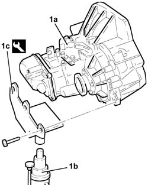
Applies to: engines: 3.2 V6, 1.9 JTD 16V; all production periods
1. Undo the bolts (1a) and remove the coaxial clutch operating cylinder (1b).
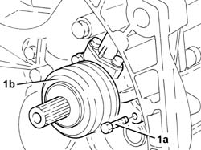
Applies to: engines: 3.2 V6, 1.9 JTD 16V; all production periods
1. Fit the gearbox and differential (1a) on the overhaul stand using the tool (1b).
| Name | Country |
|---|---|---|
1b | Mount | 1.820.146.000 |
2. Undo the bolt (2a) and remove the speedometer idler gear (2b).
3. Undo the bolts (3a) and remove the rear cover (3b).
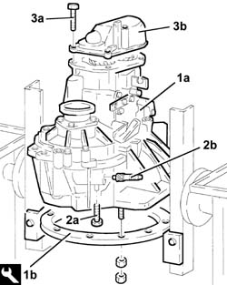
Applies to: engines: 3.2 V6, 1.9 JTD 16V; all production periods
1. Undo the bolts (1a) and remove the gear selector/engagement mounting bracket (1b).
2. Remove the left internal differential driveshaft (2a) using tools (2b) and (2c).
| Name | Country |
|---|---|---|
2b | Flange | 1.820.229.000 |
| Name | Country |
|---|---|---|
2c | Counter weight | 1.821.161.000 |
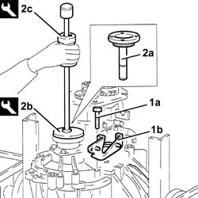
Applies to: engines: 3.2 V6, 1.9 JTD 16V; all production periods
Engage 5thspeed pressing the selector fork on the main shaft.
Engage any gear using the gear selector/engagement lever.
1. Undo the 5thspeed selector fork bolt.
2. Remove the staking and loosen the ring nuts for the main and layshafts.
Place the selector fork for 5thspeed in neutral.
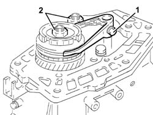
Applies to: engines: 3.2 V6, 1.9 JTD 16V; all production periods
1. Completely undo the ring nuts for the main and layshafts.
2. Remove the 5thspeed driven gear.
3. Remove the roller and spring retaining flange for the 5thspeed synchronizer.
4. Remove the 5thspeed selector fork.
5. Remove the 5thspeed sliding sleeve.
6. Remove the springs (6a) and rollers (6b) for the 5thspeed hub.
7. Remove the hub for the 5thspeed sliding sleeve.
8. Remove the 5thspeed synchronizer ring.
9. Remove the 5thspeed drive gear.
10. Remove the needle bearing for the 5thspeed drive gear.
11. Remove the bush for the 5thspeed drive gear.
12. Undo the bolt (12a) and remove the plate (12b) retaining the main and layshaft rear bearings.
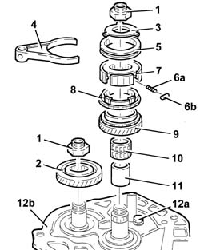
Applies to: engines: 3.2 V6, 1.9 JTD 16V; all production periods
1. Remove the main and layshaft rear bearing circlips.
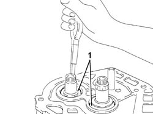
Applies to: engines: 3.2 V6, 1.9 JTD 16V; all production periods
1. Undo plugs (1a) and remove springs (1b) and balls (1c) for gear control rod positioning.
2. Undo the Reverse shaft fixing bolt.
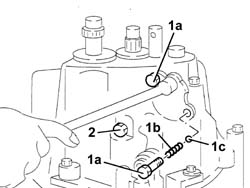
Applies to: engines: 3.2 V6, 1.9 JTD 16V; all production periods
Undo the bolts and remove the differential flange complete with oil seals, O-Rings and scraper ring.
1. Undo the bolts fixing the gearbox casing to the bell housing.
2. Position the gear selector/engagement lever downwards.
3. Remove the gearbox casing using two screwdrivers in the special projections.
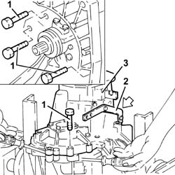
Applies to: engines: 3.2 V6, 1.9 JTD 16V; all production periods
1. Undo the bolts (1a) and remove the Reverse gear selector fork mounting bracket (1b).
2. Remove the Reverse idler gear.
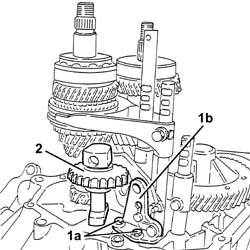
Applies to: engines: 3.2 V6, 1.9 JTD 16V; all production periods
1. Undo the bolts securing the 1st-2nd(1a) and 3rd-4thspeed (1b) selector forks.
2. Remove the 1st-2ndspeed control rod (2a) together with the selector fork (2b) and 3rd-4thspeed control rod (2c).
3. Simultaneously remove the 5th-Reverse control rod (3a) and the 3rd-4thspeed selector fork (3b).
4. Remove the gear engagement safety pawls.
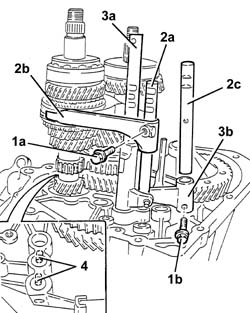
Applies to: engines: 3.2 V6, 1.9 JTD 16V; all production periods
1. Remove the main shaft and layshaft assemblies simultaneously.
2. Remove the differential assembly.
3. Remove the main and layshaft front bearings.
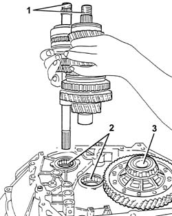
Applies to: engines: 3.2 V6, 1.9 JTD 16V; all production periods
1. Remove the magnet.
2. Remove the engine side oil seal for the bell housing.
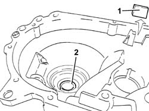
Applies to: engines: 3.2 V6, 1.9 JTD 16V; all production periods
1. Undo the gear selector bolt.
2. Remove the pin (2a) using a suitable drift and remove the gear selector (2b).
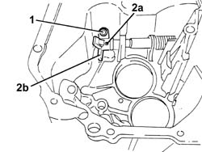
Applies to: engines: 3.2 V6, 1.9 JTD 16V; all production periods
1. Undo the bolts (1a) and remove the gear selector/engagement lever (1b).
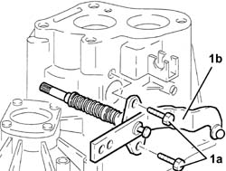
Applies to: engines: 3.2 V6, 1.9 JTD 16V; all production periods
Proceed with dismantling the layshaft, following the instructions given below.
1. Remove the rear bearing (1a), the 4thspeed driven gear (1b) and the spacer between 3rdand 4thspeeds (1c) using a hydraulic press, a plate (1d) and the half-rings (1e).
| Name | Country |
|---|---|---|
1d | Plate | 1.820.024.000 |
| Name | Country |
|---|---|---|
1e | Half-rings | 1.820.017.000 |
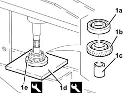
Applies to: engines: 3.2 V6, 1.9 JTD 16V; all production periods
1. Remove the 3rdspeed driven gear (1a) and the 2ndspeed driven gear (1b) using a hydraulic press and half plate (1c).
| Name | Country |
|---|---|---|
1c | Plate | 1.820.019.000 |
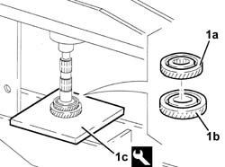
Applies to: engines: 3.2 V6, 1.9 JTD 16V; all production periods
1. Remove the sliding sleeve for 1st- 2ndand Reverse gears.
2. Remove the springs (2a) and the rollers (2b) for the 1st-2ndspeed and Reverse sliding sleeve hub.
3. Remove the 2ndspeed synchronizer ring.
4. Remove the needle bearing for the 2ndspeed driven gear.
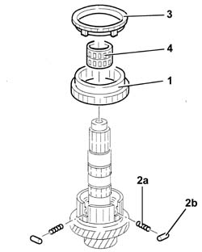
Applies to: engines: 3.2 V6, 1.9 JTD 16V; all production periods
1. Remove the 1st-2ndspeed and Reverse hub circlip using suitable pliers.
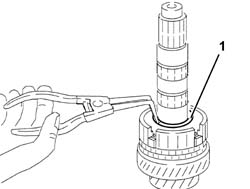
Applies to: engines: 3.2 V6, 1.9 JTD 16V; all production periods
1. Remove the 1st, 2ndand reverse gear sliding sleeve hub (1a), the 1stspeed synchronizer (1b), the 1stspeed driven gear (1c) using a hydraulic press and the plate (1d).
| Name | Country |
|---|---|---|
1d | Plate | 1.820.024.000 |
2. Remove the needle bearing.
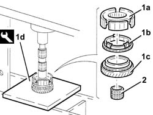
Applies to: engines: 3.2 V6, 1.9 JTD 16V; all production periods
Proceed with dismantling the main shaft, following the instructions given below.
1. Remove:
the rear bearing (1a),
the 4thspeed driven gear (1b),
the needle bearing for the 4thspeed drive gear (1c),
the bush for the 4thspeed drive gear (1d),
3rdand 4thspeed sliding sleeve (1e),
the springs (1f) and rollers (1g) for the 3rdand 4thspeed sliding sleeve hub,
the 4thspeed synchronizer ring (1h),
the 3rdand 4thspeed sliding sleeve hub (1i),
the 3rdspeed synchronizer ring (1l),
3rdspeed drive gear (1m),
using a hydraulic press, plate (1n) and half-rings (1o).
| Name | Country |
|---|---|---|
1n | Plate | 1.820.024.000 |
| Name | Country |
|---|---|---|
1o | Half-rings | 1.820.017.000 |
2. Remove the needle bearing for the 3rdspeed drive gear.
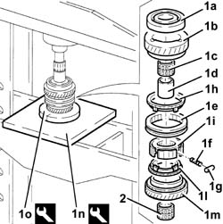
Applies to: engines: 3.2 V6, 1.9 JTD 16V; all production periods
Refitting
RemovingProceed with washing and checking the condition of all the components.
Proceed with the reassembly of the main shaft, following the instructions given below.
1. Fit the needle bearing for the 3rdspeed drive gear.
2. Fit the 3rdspeed drive gear.
3. Fit the 3rdspeed synchronizer ring.
4. Fit the 3rdand 4thspeed sliding sleeve hub.
5. Fit the 3rdand 4thspeed sliding sleeve.
6. Fit the springs (6a) and rollers (6b) in the sliding sleeve hub.
To avoid losing the synchronizer springs and rollers, place the sliding sleeve in neutral.
7. Fit the 4thspeed synchronizer ring.
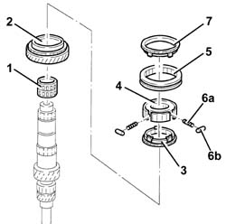
Applies to: engines: 3.2 V6, 1.9 JTD 16V; all production periods
1. Place the bush for the 4thspeed drive gear (1a), the roller bearing for the 4thspeed drive gear (1b) and the 4thspeed drive gear (1c) back in their housings using a hydraulic press and the half-plates (1d).
| Name | Country |
|---|---|---|
1d | Half-plates | 1.821.149.000 |
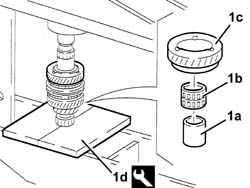
Applies to: engines: 3.2 V6, 1.9 JTD 16V; all production periods
1. Fit the rear bearing (1a), using a hydraulic press, fitting tool (1b) and suitable half-plates (1c).
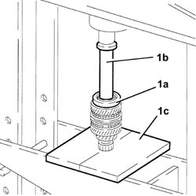
Applies to: engines: 3.2 V6, 1.9 JTD 16V; all production periods
Proceed with the reassembly of the layshaft, following the instructions given below.
1. Fit the needle bearing for the 1stspeed driven gear.
2. Fit the 1stspeed driven gear.
3. Fit the 1stspeed synchronizer ring.
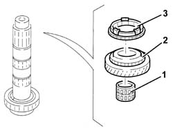
Applies to: engines: 3.2 V6, 1.9 JTD 16V; all production periods
1. Place the 1stand 2ndspeed sliding sleeve hub (1a) back in its housing using a hydraulic press, the half-plates (1b) and the fitting tool (1c).
| Name | Country |
|---|---|---|
1b | Half-plates | 1.820.022.000 |
| Name | Country |
|---|---|---|
1c | Tool for Extracting/Fitting | 1.870.658.000 |
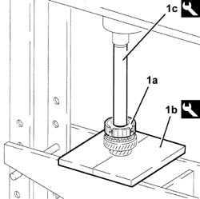
Applies to: engines: 3.2 V6, 1.9 JTD 16V; all production periods
Fit a new 1stand 2ndspeed sliding sleeve hub circlip.
1. Fit the 1st- 2ndand reverse sliding sleeve.
2. Fit the springs (2a) and rollers (2b) in the hub for the 1stand 2ndand Reverse sliding sleeve.
To avoid losing the synchronizer springs and rollers, place the sliding sleeve in neutral.
3. Fit the needle bearing for the 2ndspeed driven gear.
4. Fit the 2ndspeed synchronizer ring.
5. Fit the 2ndspeed driven gear.
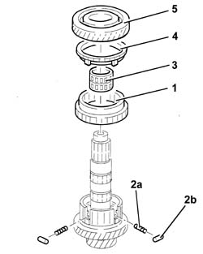
Applies to: engines: 3.2 V6, 1.9 JTD 16V; all production periods
1. Fit the 3rdspeed driven gear (1a), using a hydraulic press, a suitable plate (1b) and the fitting tool (1c).
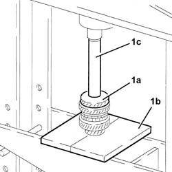
Applies to: engines: 3.2 V6, 1.9 JTD 16V; all production periods
1. Place the 4rdspeed driven gear (1a) back in its housing using a hydraulic press, the half-plates (1b) and the fitting tool (1c).
| Name | Country |
|---|---|---|
1b | Half-plates | 1.820.022.000 |
| Name | Country |
|---|---|---|
1c | Fitting tool | 1.821.050.000 |
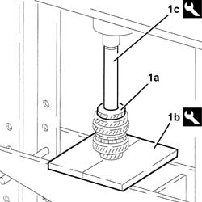
Applies to: engines: 3.2 V6, 1.9 JTD 16V; all production periods
1. Fit the rear bearing (1a), using a hydraulic press, the half plates (1b) and the fitting tool (1c).
| Name | Country |
|---|---|---|
1b | Half-plates | 1.820.022.000 |
| Name | Country |
|---|---|---|
1c | Tool for Extracting/Fitting | 1.870.117.000 |
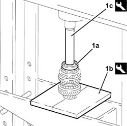
Applies to: engines: 3.2 V6, 1.9 JTD 16V; all production periods
1. Fit the gear selector/engagement lever (1a) and fix it tightening the bolts (1b) to torque.
 | Fastening | Component | Ø | Value (daNm) |
|---|---|---|---|---|
1b | Bolt | Gear selector/engagement lever | M8 | 2.1 - 2.6 |
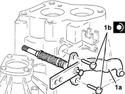
Applies to: engines: 3.2 V6, 1.9 JTD 16V; all production periods
1. Fit the gear selector (1a) and fix it with the pin (1b) and bolt (1c).
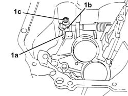
Applies to: engines: 3.2 V6, 1.9 JTD 16V; all production periods
1. Fit a new engine side oil seal (1a) for the bell housing using tools (1b) and (1c).
| Name | Country |
|---|---|---|
1b | Grip | 1.821.171.000 |
| Name | Country |
|---|---|---|
1c | Fitting tool | 1.821.225.000 |
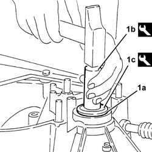
Applies to: engines: 3.2 V6, 1.9 JTD 16V; all production periods
1. Fit the magnet.
2. Fit the main and layshaft front bearings.
3. Fit the differential assembly.
4. Fit the main shaft and layshaft assemblies simultaneously.
5. Fit the gear engagement safety pawls (5a) using a drift (5b) and tool (5c).
| Name | Country |
|---|---|---|
5c | Fitting tool | 1.821.047.000 |
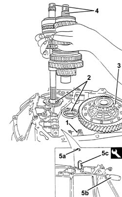
Applies to: engines: 3.2 V6, 1.9 JTD 16V; all production periods
1. Fit the Reverse idler gear.
2. Fit the 5thspeed and Reverse control rod.
3. Fit the 3rd- 4thspeed selector fork (3a) and the control rod (3b).
4. Fit the 1st- 2ndspeed control rod (4a), complete with selector fork (4b).
5. Tighten the bolts for the 1st-2ndspeed (5a) and 3rd-4thspeed selector forks (5b) to torque.
| Fastening | Component | Ø | Value (daNm) |
|---|---|---|---|---|
5a | Bolt | 1st - 2nd speed selector fork | M6 | 1.5 - 1.9 |
| Fastening | Component | Ø | Value (daNm) |
|---|---|---|---|---|
5b | Bolt | 3rd - 4th speed selector fork | M6 | 1.5 - 1.9 |
6. Fit the Reverse selector fork mounting bracket (6a) and fix it tightening the bolts (6b) to torque.
| Fastening | Component | Ø | Value (daNm) |
|---|---|---|---|---|
- | Bolt | Reverse selector fork mounting bracket | M6 | 8.5 - 1.1 |
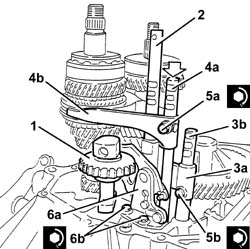
Applies to: engines: 3.2 V6, 1.9 JTD 16V; all production periods
Position all the gear selector forks in neutral.
Apply sealant to the contact surfaces between the bell housing and the gearbox casing.
 | Type | Component | Name | Qty. |
|---|---|---|---|---|
- | Sealant | GEARBOX SEALS/GASKETS | Loctite 573 | - |
Fit the gearbox casing on the bell housing.
Keep the gear selector/engagement lever upwards and check that the gear selector engages with the 3rd- 4thspeed selector fork.
Tighten the bolts for the gearbox casing to torque.
| Fastening | Component | Ø | Value (daNm) |
|---|---|---|---|---|
- | Bolt | GEARBOX GEAR CASING | M8 | 2.1 - 2.6 |
Fit the gear control rod positioning balls and springs and tighten the plugs.
Tighten the reverse shaft bolt to torque.
| Fastening | Component | Ø | Value (daNm) |
|---|---|---|---|---|
- | Bolt | REVERSE IDLER | M8 | 2.9 - 3.6 |
Fit the main and layshaft rear bearing circlips.
Apply sealant to the contact surfaces between the gearbox casing and the main and layshaft rear bearing retaining plate.
| Type | Component | Name | Qty. |
|---|---|---|---|---|
- | Sealant | GEARBOX SEALS/GASKETS | Loctite 573 | - |
Fit the main and layshaft rear bearing retaining plate and secure it by tightening the bolt to torque.
| Fastening | Component | Ø | Value (daNm) |
|---|---|---|---|---|
- | Bolt | Main and layshaft rear bearing retaining plate.... | M8 | 2.1 - 2.6 |
1. Fit the 5thspeed drive gear bush.
2. Fit the needle bearing for the 5thspeed drive gear.
3. Fit the 5thspeed drive gear.
4. Fit the 5thspeed synchronizer gear.
5. Fit the 5thspeed sliding sleeve hub.
6. Fit the 5thspeed sliding sleeve.
7. Fit the springs (7a) and the rollers (7b) for the 5thspeed sliding sleeve hub.
8. Fit the 5thspeed selector fork.
9. Fit the 5thspeed synchronizer springs and rollers retaining flange.
10. Fit the 5thspeed driven gear.
11. Tighten the new ring nuts for the main and layshafts to torque.
| Fastening | Component | Ø | Value (daNm) |
|---|---|---|---|---|
- | Ring nut | GEAR SHAFTS | M20 | 10 - 12.4 |
12. Tighten the bolt for the 5thspeed selector fork to torque.
| Fastening | Component | Ø | Value (daNm) |
|---|---|---|---|---|
- | Bolt | 5thª speed selector fork | M6 | 1.5 - 1.9 |
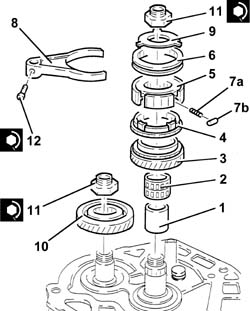
Applies to: engines: 3.2 V6, 1.9 JTD 16V; all production periods
Apply sealant to the contact surfaces between the main and layshaft rear bearing retaining plate and the rear cover.
| Type | Component | Name | Qty. |
|---|---|---|---|---|
- | Sealant | GEARBOX SEALS/GASKETS | Loctite 573 | - |
1. Fit the rear cover (1a) and fix it tightening the bolts (1b) to torque.
| Fastening | Component | Ø | Value (daNm) |
|---|---|---|---|---|
- | Bolt | GEARBOX REAR COVER | M8 | 2.1 ÷ 2.6 |
2. Fit the speedometer idler gear (2a) and fix it using the bolt (2b).
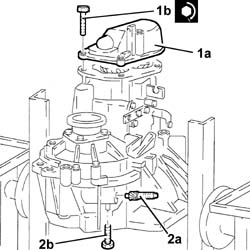
Applies to: engines: 3.2 V6, 1.9 JTD 16V; all production periods
Place the gearbox side differential flange complete with a new oil seal back in its housing and secure it using the bolts.
1. Position the tool, complete with dial gauge, on the surface of the engine side differential and zero the dial gauge with a pre-loading of 1 mm.
| Name | Country |
|---|---|---|
1 | Dial gauge mounting | 1.820.085.000 |
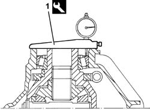
Applies to: engines: 3.2 V6, 1.9 JTD 16V; all production periods
1. Position the tool (1a), complete with dial gauge, on the differential flange, engine side (1b) and measure the difference.
| Name | Country |
|---|---|---|
1a | Dial gauge mounting | 1.820.085.000 |
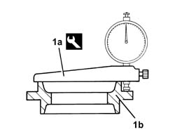
Applies to: engines: 3.2 V6, 1.9 JTD 16V; all production periods
Calculate the size of the adjustment shim for pre-loading the differential bearings adding 0.12 mm to the difference measured.
1. Place in the housing the adjustment shim or shims for pre-loading the differential bearings, of the size calculated or the next size up.
Place the differential flange complete with new oil seal back in its housing and secure it using the bolts.
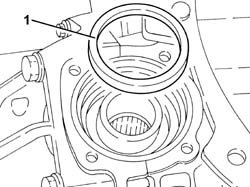
Applies to: engines: 3.2 V6, 1.9 JTD 16V; all production periods
Fit the gear selector/engagement mounting bracket and fix it using the bolts.
Fit the left differential internal driveshaft.
Fit the coaxial clutch operating cylinder and secure using the bolts.
Undo the fixings and remove the gearbox and differential from the tool.
| Name | Country |
|---|---|---|
- | Mount | 1.820.146.000 |
Remove the tool supporting the overhaul stand and put it back.
Position the gearbox and differential on the tool used for the removing-refitting from the vehicle.
| Name | Country |
|---|---|---|
- | Mount | 1.820.623.001 |